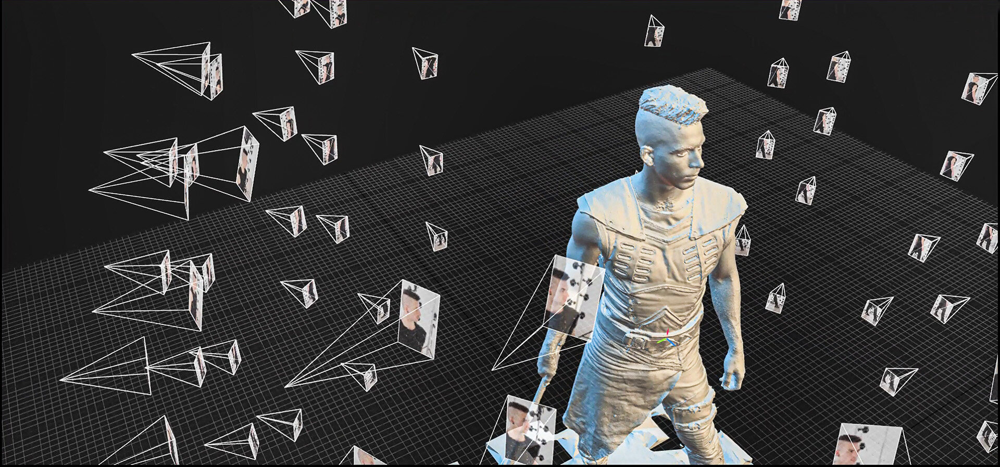

Digital Reconstruction By Matty
Creating digital reconstructions of the world around us has become vital in many different fields, including medicine, scientific research, engineering, geography, and even gaming and TV. Modern techniques allow 3D models and accurate measurements to be taken from just a set of images, and can even be used to synthesize completely novel views of digital scenes, sometimes much faster and more accurately than traditional rendering.
Photogrammetry
Photogrammetry is the process of reconstructing an accurate 3D model of a real world object from just 2D images. This can produce exceptionally detailed and accurate models, perfect for use in simulation, CGI, and scientific work. Of particular note, using this technique can eliminate the need for hand-modelling many models which are tricky to make in traditional ways. This allows gaming and VFX studios to produce better quality models for less cost, benefitting consumers and allowing virtual worlds come to life.
NeRFs
Shifting the focus away from model synthesis, and towards view synthesis, enter NeRFs. Neural Radiance Fields (NeRFs) are a tecnique developed in 2020 by a team at Berkeley that use neural networks to synthesize new views of a scene, using just a handful of images. Since the original paper, the technique has been developed and improved in several follow up works. NeRFs are not only able to simulate the shape and texture of the environment, but also complicated lighting and reflective changes too, making them capable of producing results more realistic than almost any other technique.
Because they are so new, NeRFs are yet to see many concrete applications in the real world, however the future could see this technique implemented into smartphone photography, virtual tours, gaming and more.
Gaussian Splatting
Gaussian Splatting is a very modern technique, being unveiled in August 2023. It promises to revolutionalize view synthesis, and possibly all computer rendering in general. While it aims to tackle the same problem as NeRFs, it uses a different approach. Unlike NeRF, gaussian splatting is a hand crafted algorithm, meaning it uses no neural networks or machine learning of any kind. Instead, gaussian splatting recomstructs the scene with an iterative algorithm, building the scene, not from geometry, but from gaussians. These are 3D distributions that can be stretched and recoloured, allowing them to reconstruct very fine details. The use of gaussians also allows the scene to be rendered incredibly quickly on the GPU, much faster than real-time.
With such incredible results, calculated an unprecedented speeds, gaussian splatting is sure to revolutionalize computer graphics for years to come.
Matty Muir
Matty is a student of computer science at Durham University. He has a love for
computer graphics, mathematical science, and high performance computing.
After learning to code when he was young, matty has worked on many personal projects, mostly written in the language C++. His work has a clear focus on performance, especially in mathematical contexts. This includes a graphing calculator, Euclid Numbers searcher, and a Rubik's Cube simulator.